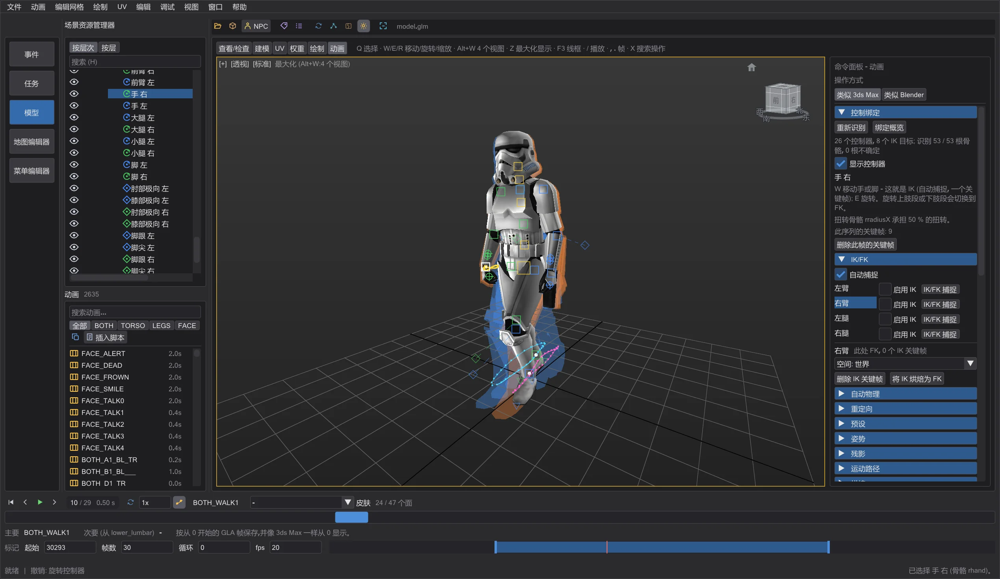
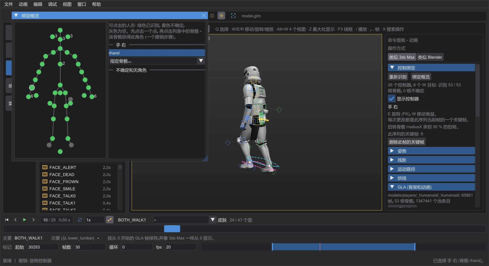
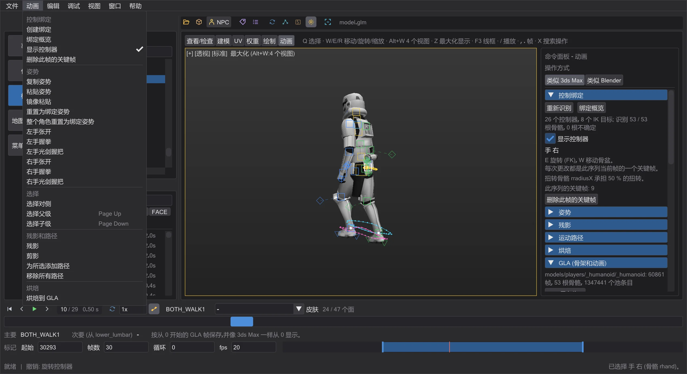

模型选项卡: 控制绑定、姿势、残影和路径
识别骨骼, 一键创建控制绑定, 用 FK 摆姿势, 复制和镜像姿势, 查看残影和运动路径, 并把结果烘焙到 GLA。

一键创建绑定#
在 动画 区域, 创建绑定 (也在菜单 动画、视图右键和搜索 X/F3 中) 识别每根骨骼: 它的角色 (骨盆、脊柱、颈、头、锁骨、上臂、前臂、手、手指、大腿、小腿、脚、脚趾、扭转骨骼、标签骨骼、面部) 和它的侧别。名称给出第一个答案 (pelvis、lhumerus、r_d1_j1、L_thigh、leg_left_bone01 ...); 层次和绑定姿势进行检查——腿挂在肢体伸得最低的地方, 肢体的各部分向外依次相连, 脊柱从骨盆升到头, 侧别来自骨架的侧轴。名称与位置矛盾时以位置为准, 并把骨骼标记为不确定。这适用于 Jedi Academy (53 根骨骼)、Jedi Outcast (72 根, 全部平铺在 pelvis 和 thoracic 下) 以及 Movie Duels 的生物和机器人的骨架。绑定随后为身体每个部分提供控制器、肘和膝的极向目标、脚部滚动 (脚跟、脚掌、脚尖) 以及 *r_hand 处的光剑握把; 极向目标和脚部滚动随 IK 生效 (见 IK/FK 页)。
概览: 点击指定#
绑定概览 显示一个人形: 绿点已识别, 黄点不确定, 灰点为空; 数字表示有多少骨骼共享此角色 (手指、脊柱)。悬停在点上可看到它的骨骼, 不确定时还有原因。点击一个点, 再点击 不确定和无角色 或 指定骨骼 中的骨骼——该骨骼获得此角色。指定属于模型文档 (Ctrl+Z), 绑定会立即重建。

摆姿势: 像 3ds Max 和像 Blender 的 FK#
控制器位于场景资源管理器的 控制绑定 下 (有自己的符号, 眼睛可在视图中隐藏) 以及视图中——像 3ds Max 时为方框, 像 Blender 时为圆环, 左蓝、右绿、中黄。在视图或资源管理器中点击一个。像 3ds Max 时 E 显示旋转小部件, W 移动骨盆; 像 Blender 时 R 旋转 (X/Y/Z 选轴, 点击或 Enter 确认, Esc 取消), G 移动骨盆。每次旋转都是 FK, 与游戏转动头部或躯干的方式相同 (G2API_SetBoneAngles), 并在所选序列的当前帧生成关键帧; 两个关键帧之间的姿势会插值。属于手但在骨架中不在手下面的骨骼 (Jedi Academy 中 rradius 下的手指, Jedi Outcast 的整条手臂) 会一起转动, 扭转骨骼 (rradiusX) 按其在前臂上的位置承担相应比例的扭转。关键帧不会重建网格; Ctrl+Z 可逐个撤销。
姿势、镜像和手部姿势#
复制姿势 记住每根骨骼当前所见的姿势, 粘贴姿势 把它设为另一帧的关键帧, 镜像粘贴 则交换左右并以骨架侧轴镜像 (像 Blender: Ctrl+C、Ctrl+V、Ctrl+Shift+V)。重置为绑定姿势 (Blender Alt+R) 和 整个角色重置为绑定姿势 回到 GLA 的绑定姿势。手部姿势来自游戏本身的动画: 张开是绑定姿势, 握拳是 BOTH_MELEE1 的第一帧, 光剑握把是 BOTH_STAND1 的第一帧。选择时 选择父级 和 选择子级 在骨架中移动 (3ds Max 的 Page Up / Page Down, Blender 的 [ 和 ]), 选择对侧 跳到另一侧的骨骼 (Blender Ctrl+Shift+M)。

残影、剪影和运动路径#
残影 以半透明显示当前帧之前 (蓝) 和之后 (橙) 的姿势——数量和间隔在 之前、之后 和 间隔 中设置, 颜色在其下方。剪影 在浅色背景上把角色画成黑色, 用于判断姿势的可读性。为所选添加路径 显示所选骨骼或标签 (光剑用 *r_hand、脚、根) 在前后各帧的轨迹: 每帧一个点, 当前帧为白色, 关键帧为方块。残影和路径保持在序列内, 并立即跟随每个关键帧。
烘焙到 GLA#
烘焙到 GLA 将所选序列连同绑定的关键帧写为 GLA 帧, 并放到 目标 GLA 和槽位 中目标 (地图 GLA、_humanoid.gla 或自有 GLA) 的下一个空闲槽位。没有关键帧的骨骼保留原 GLA 的 14 字节; 改动的骨骼按 Carcass 的方式压缩 (compressBone)。未改动的绑定会逐字节烘焙出原件——已在 Jedi Academy、Jedi Outcast 和 Movie Duels 的每个 GLA 上检查; 全部重新压缩时每个四元数分量的差异不超过两个量化级。